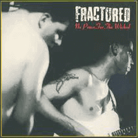

Fractured - No Peace For The Wicked (MiniAlbum, 2007)
01 - Honest Lovin' (2:40)
02 - Chauffeur Driven Limousine (2:23)
03 - Dark Blue Sea (1:45)
04 - Kisses Sweeter Than Wine (2:16)
05 - Girl On The Corner (3:54)
06 - Gamblin' Man (2:11)
07 - Sold My Secret (3:03)
08 - Big John (3:32)
© I.D. Records 1987 © Raucous Records 2007 :: [RAUCD213]
Notes
United Kingdom.
Original Release (I.D.Records [NOSE17], Vinyl, 12", 45RPM, Mini-Album)
Phonographic Copyright ℗ - Head Music Publishers
Copyright © - Head Music Publishers
Distributed By - Revolver
Distributed By - The Cartel
Designed At - Technimedia Graphics Ltd.
Pressed By - MPO
Recorded At - The Madhouse
Recorded At - The Town And Country Club, London
CD Release (Raucous Records [RAUCD213])
Recorded at the Madhouse, Luton.
Big John recorded live at the Town and Country Club, Saturday 6th June 1987.
Special thanks to Big Al, John and Lilly.
Sleeve Designed at Technimedia Graphics Ltd.
Repackaged by Beauchamp Partnership
Distributed By - Backs/Pinnacle/Shellshock
℗ © 1987 Head Music Publishers.
All songs are written-by Paul Everdell, but two are covers.
"Kisses Sweeter Than Wine" is written-by Joel Newman, Paul Campbell.
"Big John" is written-by Jimmy Dean.
Paul Everdell - Lead Vocals, Lead Guitar
Nick Hoadley - Slap Bass
Paul 'Squit' Davies - Drums
Mike Herman - Second Guitar, Backing Vocals
Pete Gage - Producer
Savage Henry - Sleeve
reference information: Discogs®
Review
049/366 (Project 366)
Album "No Peace For The Wicked" right from the first track with really very charged and wound up sound. Wild rhythm with lovely lyrics! What is else need for a good Rockabilly / Psychobilly rockin' and rollin' band. In its entirely, good rock and roll event with slightly garage view! I think that my feelings are also around something like a bit psycho boppin' rockabilly rhythmed concept. Another sight is a speedy nimble motion of arrangements! All in all, the songs have a good dosage and balance between (neo)Rockabilly and (softened)Psychobilly. When speed is discussed - it is not like any long-term established psycho patterns. There is a more melodic sound and more structured even though by Fractured.
Because of (the mostly) dashing start of the songs - there is a bit sudden appearance of them.
While first song "Honest Lovin'" is well balanced on its tune, second track "Chauffeur Driven Limousine" is wild on its courage. Third track is a perfect remediation between previous part and further songs; and, in addition, "Dark Blue See" is remembered by its small psycho rockabilly rhythm, rock'n'roll feelings and it is a really energetic up-and-coming record (by the way, second in the row). This part of the "No Peace For The Wicked" was, perhaps, good example of something as old school sound.
Fourth track "Kisses Sweeter Than Wine" goes to dulcet tune of rustic bop. In fact, this is a really refreshing track and did not break sound of album. Instead it is part of entire picture. And such as a countrysiding and dance-oriented composition is cool! Song is representation of sweetest folk song. I heard it as the Weavers song and as Jimmie Rodgers cover, perhaps. It was a sensible folk-powered hit. This rockabilly-oriented tune is different, but still sweet. To plunge into tenderness will not work. Since the following "Girl On The Corner" is filled with sensible humor. Strong drums rhythm, hits and bumps, dynamic singing and rockabilly guitars are painted the song! Fifth song "Gamblin' Man" with such a loony rock and roll rhythm towards the coolest rockabilly. Perfect interpretation of lyrics and theme into sound! This is even the beginning of entire part in a hot mood! Where a lot of beauty musical swings in permanent dynamic, a lot of raw scratching and tearing parts! Seventh track are not least than "Gamblin' Man" in its straight forward direction. Instrumental sound dampens vocals a little. Or, perhaps, shifts the focus on itself more than in other tracks. Last track "Big John" is a live record with fancy start, furious middle and fad end! In fact, good choice for something as a bonus track.
I will pair some tracks in groups. For example, flows "Honest Lovin'":"Kisses Sweeter Than Wine", then "Chauffeur Driven Limousine":"Dark Blue Sea":"Girl On The Corner", "Gamblin' Man":"Sold My Secret" and finally "Big John". Bonus track is on its single flow as a self-powered live rendition.
The album features a high tempo. It can be said that it is almost uncompromising sound! Overdrive for home listening. But, perhaps, should be perfect for live performance.
Some pearls of album are rocket powered winding guitar or even flow where tasty fingering leads to fancy looping. It is very interesting to stick with that sound. And it might have been too interesting to listen to this band live! Based on last track from album - public liked it indeed.
The sound of the album is remembered and there is a desire to listen to it even after some time. However, there is no strict clarity about what specifically you want to listen to and what song. And, in general, compositions that are quite resembling in performance are still remembered by something of their own. I prefer to think that "Honest Lovin'" and "Dark Blue Sea" are the tracks to listen more and more. Though, "Gamblin' Man" and seventh track are strongly welcomed by its cool saucy tune. Other songs are well too and it is good to spice up your impressions and feelings from the band's creativity by them. Nevertheless, it is a real pleasure to listen "Kisses Sweeter Than Wine" among playlist.
Despite the fact that all songs are very exclusive - album with strong single "Fractured" style. Although sounds a bit as showcase... it is anyway pretty and self-sounding. Maybe original LPs were actually positioned as promo MiniAlbum at the time of 1987. At the time of 2007 - that CD was already something surprisingly fresh. At the time of 2020 - it is good opportunity to check it out!